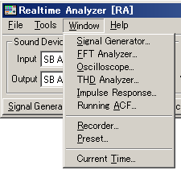
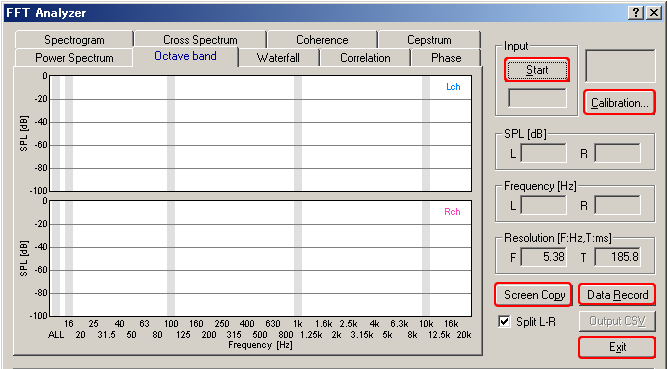

DSSF3 > RA > Reference Manual
Keyboard shortcut
A keyboard shortcut is a combination of keys that can be pressed to do something that you normally do with the mouse. This topic instructs how to find and use keyboard shortcuts in RA.
For example, as in the figure below, items in the menu bar start with underbars like Window. This means that you can press Alt + W to see the window menu. The buttons on the RA's main window also have shortcuts (Signal Generator, FFT Analyzer, Oscilloscope, and so).

Some of the buttons on the measurement window also have shortcuts. The most useful one might be the Start / Stop key. To start and stop the measurement, just press the S key. In other window, several buttons have shortcuts as well. Check the measurement window and find useful shortcuts.

DSSF3 > RA > Reference Manual